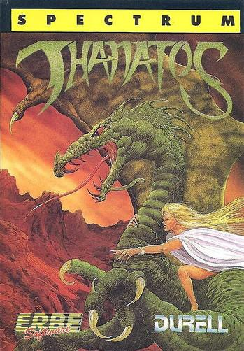
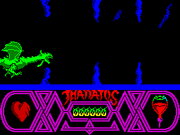

Thanatos


{kind=link}

| Publisher: | Durell |
| Price: | £9.95 |
| Year: | 1986 |
| Source: | CRASH, Issue 35 |

Let’s face it, the dragons of this world have had a pretty bad press. Ever since George did his bit of dragon bashing, people have been going around being very butch and sticking it to these badly misunderstood creatures.
Quite understandably, the dragons have always resented this. Lovers of the peaceful life, constantly being harassed by these tin plate tinheads just didn’t fit in with their lifestyle. Thus, in order to be able to put their feet up and get a good (k)night’s kip, your average dragon has to torch a good fifty mile radius around his home just to be sure of a bit of ’ush. And thus the legend of the bad old drag’ with a breath problem was born. So, he makes a snack of the odd maiden or two? Well, nobody’s perfect!
In a bid to rehabilitate the image of these poor old creatures, Mike Richardson has foresaken his previous hi-tech worlds of fast cars and high flying helicopters for a more rustic setting.

local human who insists on lobbing spears
at his scaly hide. Nasty man must have
read too many St George stories
In this pastoral land, the good dragon — Thanatos the Destroyer — must do his duty. The good Sorceress Eros has been imprisoned by an evil Lord of the underworld, and to add to her problems the rest of her belongings — spell books, trusty cat and so on — have been locked up in separate castles. These must be restored to the Sorceress so that she can bring light and enlightenment to the land, and forever clear the good name of dragons.
The Dragon is controlled by joystick or keys with up, down, accelerate and decelerate. Hitting the fire button does just that — the Dragon breathes fire, either up or down depending on the up/down keys. Pressing fire and the decelerate key causes the dragon to reverse direction.
The action takes place against a scrolling background. Thanatos and the meanies move in the foreground while mountains and villages in the background scroll past more slowly giving a perspective effect. All the meanies and Thanatos are animated: men throw spears, gulls wheel around in the sky and sea serpents writhe in the sea and plunge back into the water.
The dragon flies through the air by flapping his huge wings, waddles around on the ground on claw, or can paddle and swim in the sea. To take off, just trudge along and press the ‘up’ key. Apart from breathing fire, the drag’ can set about his foes by picking them up with his talons and carrying them aloft. They are dropped again by pressing fire, and plunge to their death. By hitting another baddie with the falling body, two ‘birds’ can be killed with one stone and extra points won.
The higher the level, the more damage is done to the dragon with each brush with a meanie. These come in various shapes and sizes. Killer bees mob him, nasty two-headed dragons give him a hard time, sea serpents are out for his blood and deadly spiders hang from silver threads in the caves. On the ground he comes up against the odd pack of wolves, and has to cope with soldiers chucking things at him.
Thanatos’s life force can be restored by taking a quick breather on the ground. His life force is shown by a beating heart and as he takes damage the beat quickens. If he gets really badly damaged, the heart turns blue. If he runs out of fire, he has to refuel by taking a quick snack of nasty witch. But watch out for the knight on a white charger doing his dragon slaying bit. The only way to deal with him is to grab him with your talons while he’s galloping along — very tricky.
To win the game, Thanatos has to rescue Eros from one castle, and then take her on his back to other castles to collect various objects. There are three castles on the lower levels and four on harder levels, and it’s no day trip rescuing damsels when you’re a dragon...
CRITICISM
“I was very impressed with my first game of Thanatos: the graphics are well up to the standard of recent Durell successes and the game as a whole is extremely original in look and play. The movement of the main dragon is very smooth and realistic, and all the characters, from bees to sea monsters, are well drawn and contain lots of colour. I found it very easy to get into and highly addictive, even though it presents the same problems in the same order every time. The game is well presented, but I feel that it is a little too hard so that you may end up missing out on quite a lot — which is a pity as it is quite expensive. Another very decent game from Durell.”
“Eyes popped at the CRASH offices when we first saw the preview copy of Thanatos, and the final version is even better! You get totally enthralled in the mystic scenario. This is one game that I can’t really see myself leaving alone for weeks. Graphically what can I say? Thanatos the Wyvern (it ain’t a dragon ’cos it’s only got two legs) is the best character I have ever seen on the Spectrum. All the other characters are very nicely done, as is the countryside which scrolls astoundingly. This is the best game I have played for months, even at ten quid it still represents good value.”
“Wow! This game is really amazing; stunning, astounding, brilliant! The tune on the title screen is very nice, but the graphics are absolutely superb. The parallax scrolling works excellently, and the effect that it creates when you belt past a path, the castle, or a beach, is breathtaking (almost!) Playable and addictive, Thanatos is a game that I’ll be playing for a long time to come; if variety is the spice of life then buy this and become a chicken curry.”
COMMENTS
| Control keys: | Redefinable, up, down, left, right, fire, P to pause |
| Joystick: | Kempston, Sinclair, Interface 2 |
| Keyboard play: | Good positive feel |
| Use of colour: | Excellent, but badly masked |
| Graphics: | Gibber, gibber |
| Sound: | A haunting tune, but beep, cough, burp effects |
| Skill levels: | Eight |
| Screens: | Scrolling |
| General rating: | An excellent and rather different arcade adventure |
| Use of computer: | 94% |
| Graphics: | 95% |
| Playability: | 92% |
| Getting started: | 91% |
| Addictive qualities: | 94% |
| Value for money: | 90% |
| Overall: | 93% |